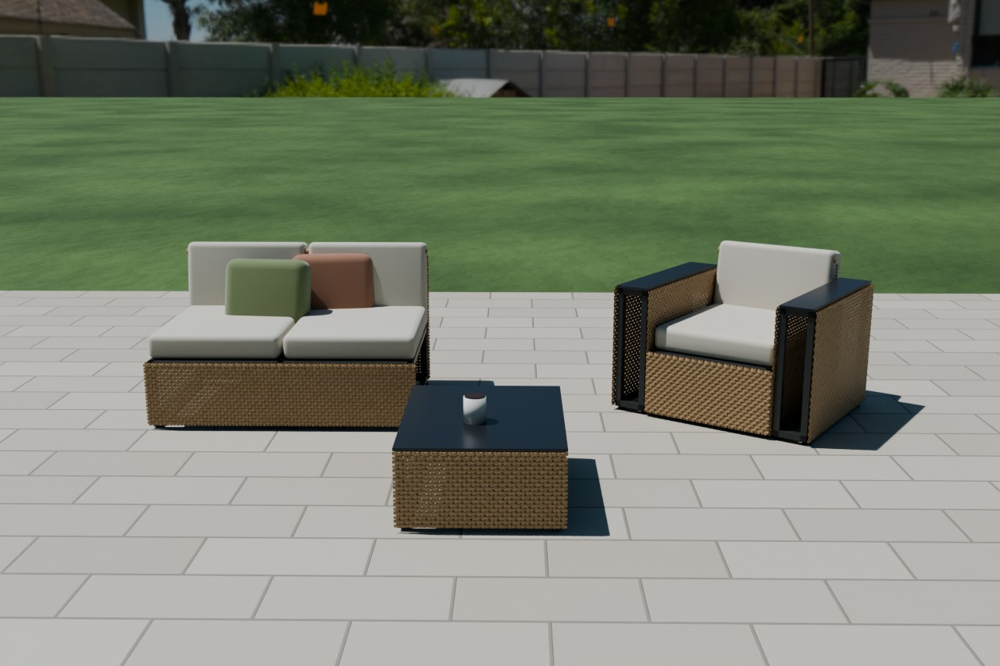
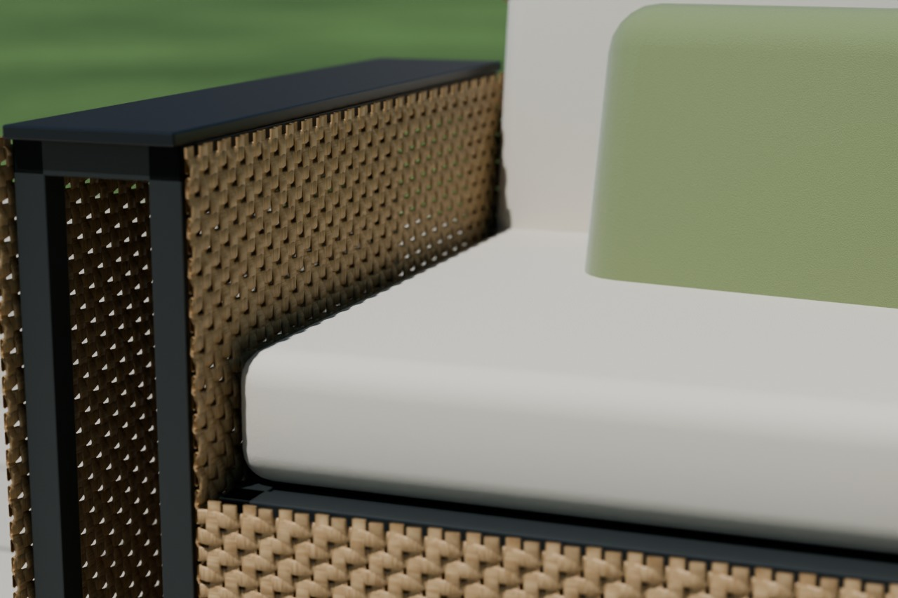

MODÜL YK
Kolçak modülü
Simetrik. İçi ve dışı aynı örgü panel, üstü HPL compact kapak. Kullanılmayan yüzdeki bağlantı pimleri altta kalır, görünmez.
- Ölçü
- 180 × 800 × 620
- Ağırlık
- ~10 kg
- Fiyat
- 4.500 ₺
Modüler dış mekân oturma sistemi · Konya
SEKİ koltukları tek parça değil. 180 mm'lik kolçak, 620 mm'lik tekli ve 1240 mm'lik ikili oturma modüllerinden kuruluyor. Aletsiz birleşiyor, taşırken ayrılıyor, gelecek yaz büyüyor.

Sistem
Bütün modüllerin yan yüzleri birbirinin aynı. Kolçak simetrik: aynı parça sola da sağa da takılıyor. Bu yüzden stokta iki değil tek kolçak kodu var, sizde de yanlış tarafı alma ihtimali yok.
MODÜL YK
Simetrik. İçi ve dışı aynı örgü panel, üstü HPL compact kapak. Kullanılmayan yüzdeki bağlantı pimleri altta kalır, görünmez.
MODÜL O1
Bir kişilik. Delikli alüminyum oturma sacı suyu geçirir, minder altında göl olmaz. Ön ve sırt paneli modül genişliğini tam kaplar.
MODÜL O2
İki kişilik tek gövde: daha az derz, daha hızlı montaj. Ortasında dikme var, sırt 1240 mm'de esnemiyor. Minderleri O1 ile aynı.
Neden 2220 mm'nin üstünde tek gövde yoktur: örgü panelini tek parça 1300 mm'ye kadar dokuyoruz. Üçlü kanepe bu yüzden O2 + O1 olarak kuruluyor — kolisi asansöre giriyor, bir paneli yırtılınca kanepenin tamamı değil o panel değişiyor.
Dizilim kurucu
Modülleri ekleyin, genişlik ve fiyat anında hesaplansın. Dizildiği gibi üretiyoruz; sonradan modül eklemek için baştan almanız gerekmiyor.
Ürünler
Fiyatlara minderler (oturma + sırt), kaymaz ayaklar ve kilit plakaları dahildir. Türkiye'de montajlı teslim, KDV dahil.
| Ürün | Modüller | Genişlik | Minder | Fiyat |
|---|---|---|---|---|
| Tekli koltuk | YK + O1 + YK | 980 mm | 1 + 1 | 17.900 ₺ |
| İkili kanepe | YK + O2 + YK | 1600 mm | 2 + 2 | 25.900 ₺ |
| Üçlü kanepe | YK + O2 + O1 + YK | 2220 mm | 3 + 3 | 34.900 ₺ |
| Kolçaksız ada | O2 | 1240 mm | 2 + 2 | 16.900 ₺ |
| Sehpa modülü | SM | 620 × 800 mm | — | 6.900 ₺ |
| Beş kişilik set Üçlü kanepe + 2 tekli koltuk + sehpa | 6 YK + 3 O1 + 1 O2 + SM | — | 5 + 5 | 72.900 ₺ |


Yolda: köşe modülü (KÖ), puf ve şezlong uzatması (PF), kolçaksız kullanım için yan kapama paneli — 2027 ilkbaharı. Hepsi bugün aldığınız modüllere aynı kilitle takılıyor.
Katlanır seri · yakında
Aynı örgü, aynı antrasit iskelet, katlanan gövde. İki sandalye ve bir masa dar bir balkonu kahvaltı köşesine çeviriyor, kullanılmadığında duvara yaslanıyor.
KS-1
Örgü oturak ve sırt. Oturak kalkar, ayaklar birbirine yatar.
KM-1
İki kişilik örgü tabla. Tabla ayakların yanına iner, masa duvara yaslanır.
Durum: katlanır seri tasarım aşamasında, ilk örnekler elde yapılacak. Yapım kılavuzu: katlanır sandalye ve masa.
Montaj
Modülleri birbirine bağlayan parça alt rayın altındaki iki mantar başlı pim ile paslanmaz V-kama plakası. Vida yok, alet yok, taşınırken sökülüyor.
ADIM 01
Aralarında birkaç milimetre boşluk kalması sorun değil. Kolçak hangi tarafa gelirse gelsin aynı parça.
ADIM 02
Plakanın iki geniş deliği pim başlarına alttan oturur. Eğilmenize gerek yok, tutamak dili elinize gelir.
ADIM 03
Daralan kanal iki modülü birbirine çeker, derz 1 mm'ye iner. Kama kendiliğinden kilitlenir; yük altında geri kaçmaz.
Malzeme
Bahçe mobilyasında en sık şikâyet iki yılda kopan örgü, küflenen minder ve bulunamayan yedek parça. SEKİ'nin üç cevabı: alüminyum, UV katkılı şerit ve panel panel değişebilen bir gövde.

Renkler
Otel, kafe ve bayi
Modüler sistem işletmede ikinci bir iş yapıyor: sezon başında dizilimi değiştiriyorsunuz, kış deposunda modüller üst üste gidiyor, hasar gören tek modül yerine geliyor.
Sipariş
Büyükkayacık OSB, Selçuklu / Konya
Hafta içi 08.30 – 18.00
Kurucudaki dizilimi kopyalayıp mesajla gönderin; ölçü, renk ve teslim tarihiyle birlikte aynı gün fiyat dönüyoruz.